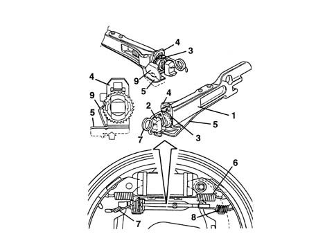
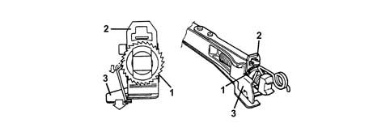
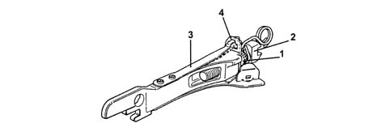

3320B REAR DRUM BRAKES
- Path
- Descriptions > 33 BRAKING SYSTEM > 3320 DRUM BRAKES > 3320B REAR DRUM BRAKES
- Kind
- system description
- Applies to
- all engines; all production periods
- Interactive page
- https://sloeber94.github.io/elrnDB-fPnd/en/#/2750930
Applies to: all engines; all production periods
SELF-ADJUSTING DEVICE FOR TAKING UP PLAY BETWEEN SHOES AND DRUM
The self-adjustment device ensures clearance between shoe and drum is taken up automatically upon each braking manoeuvre, provided adjustment is required at that time.
The device consists of a link (1) within which adjustment screw (2), to which is bolted toothed wheel (3), is free to slide.
In rest position, front spring (6) recalls the shoe and maintains the device under compression. Wheel (3) therefore presses plate (4) into contact with the end of the link (1).
Plate (4) is also subject to a pressing action by means of flexible blade (5). During the braking action, both brake shoes move apart and come into contact with the drum; both ends of the device are held in contact with the shoes by means of springs (7) and (8).
Plate (4) is pressed by flexible blade (5) where it acts against toothed wheel (3). Retainer holds it in permanent contact with the toothed wheel, which it causes to rotate.

Applies to: all engines; all production periods
SELF-ADJUSTING DEVICE FOR TAKING UP PLAY BETWEEN SHOES AND DRUM
During the release stage, the self-adjustment device is again compressed through the action of the upper shoe return spring. Toothed wheel (1) stops in the angular position assumed during braking.
The wheel stops during the rotation stage due to friction between plate (2) and toothed wheel (1). With toothed wheel (1) locked during the rotation stage, if the linings are sufficiently worn due to previous braking manoeuvres, retainer (3) moves on and engages the next tooth.

Applies to: all engines; all production periods
SELF-ADJUSTING DEVICE FOR TAKING UP PLAY BETWEEN SHOES AND DRUM
The maximum travel of toothed wheel (1) on adjustment screw (2) is one tooth (0.020 - 0.025 m); one exception to this is tooth settling following dismantling: travel is two teeth.
If the brakes should overheat to 100° ÷ 110° C as a result of excess braking, the flexible blade (3) comes into operation by bending and locking plate (4) in neutral position.

Applies to: all engines; all production periods
SELF-ADJUSTING DEVICE FOR TAKING UP PLAY BETWEEN SHOES AND DRUM
During braking, the toothed wheel is no longer subject to the thrusting action of the flexible blade. The retainer therefore assumes the same angle as the wheel tooth, which is free to slide on the retainer with the adjustment screw without taking up clearance due to drum expansion.
During service, before fitting the brake linings, move the device toothed wheel into contact with the spring and unscrew by half a turn.